星座守护 - 天马座
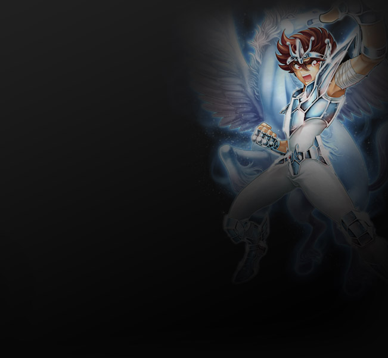
天马座
特点：天马是天生的勇士，能够将斗志化为无尽的力量展开丰富多样的攻击，令敌人胆寒。配合其强大的机动力，能够很好的压制对手。
作战范围：近身
特长：爆发输出
战术：斗气积攒与爆发、激励队伍、瞬间超速、投技
- 天马流星拳：
- 远距离快速冲击目标，打击并击倒目标周围的目标
- 流星空突拳：
- 天马座的基础招式，快速出拳打击目标
- 天马回旋击碎拳：
- 终结技，消耗当前所有的斗志，将目标抱起砸下，打击并击倒附近的目标
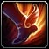
- 天马之翼：
- 短时间内提升自身移动速度和闪避，并免疫定身和减速
- 流星爆裂拳：
- 基础终结技，消耗当前所有的斗志，打击目标
- 星魂降临：
- 短时间内使一定范围内的所有队员伤害提升
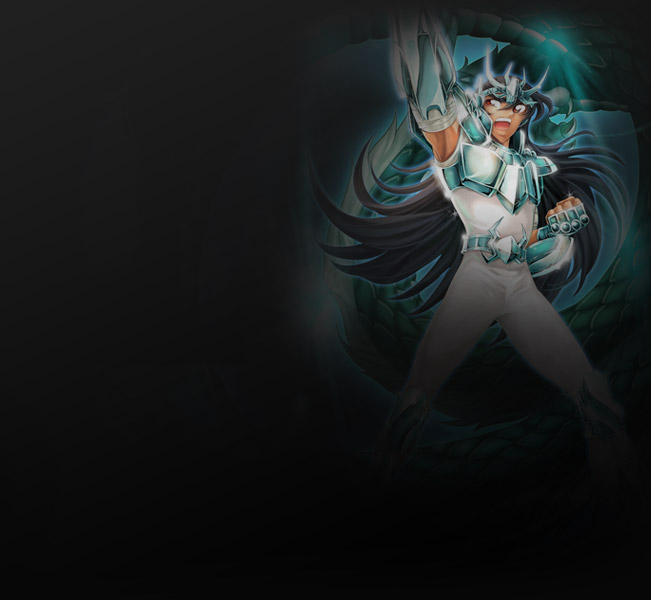
天龙座
特点：天龙在庐山大瀑布下练就了无与伦比的强大力量，这种力量令天龙无往不利。他们拥有过人的体制，能够承受更多的伤害。冲锋陷阵是团队胜利的保证
作战范围：近身
特长：生存
战术：增强回复效果、吸引仇恨、群体控制、保护队友
- 庐山升龙霸：
- 用能将庐山大瀑布逆流的神拳击飞目标
- 真龙连牙：
- 天龙座会不惜任何代价，击败敌人，即使是以命换命！消耗自己的的生命，疯狂地攻击目标
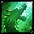
- 升龙霸：
- 用能将庐山大瀑布逆流的神拳击飞目标
- 庐山龙飞翔：
- 化为神龙，以龙头冲击目标，穿到目标身后
- 龙纹之盾：
- 给自己加上龙纹之盾保护自己，使自己免受伤害
- 升龙阵：
- 够唤醒自己内心强大的守护之力，保护自己和周围的队友
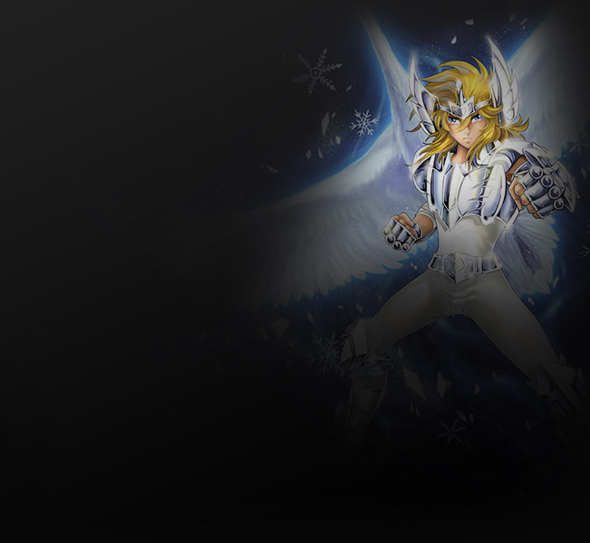
白鸟座
特点：白鸟是寒冰的化身，能够利用寒冰的力量控制敌人，释放出巨大的伤害。同时白鸟也擅长利用风和雷的力量，玩弄敌人于鼓掌之上。
作战范围：远程
特长：冻结
战术：群体冻结、触发冰爆、冰封区域、解除控制
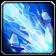
- 钻石星辰拳：
- 白鸟座的进阶招式，运用极地冰寒伤害目标
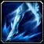
- 白鸟之舞：
- 在原地释放强大的寒气，使周围敌人减速。同时自己跳向后方
- 冰柩：
- 用深寒之力将目标冰封
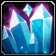
- 冰封大地：
- 将极寒注入自己脚下的土地，使得范围内的敌人持续受到极寒的威慑，停留时间过长的敌人就会受到冰霜的审判而被冰冻
- 钻石巨拳：
- 白鸟座的基础招式，远程攻击目标
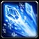
- 曙光女神的宽恕：
- 白鸟座的终极奥义，以曙光女神的冰霜轰击目标，冰霜会对其经过的路径上的敌人产生溅射伤害
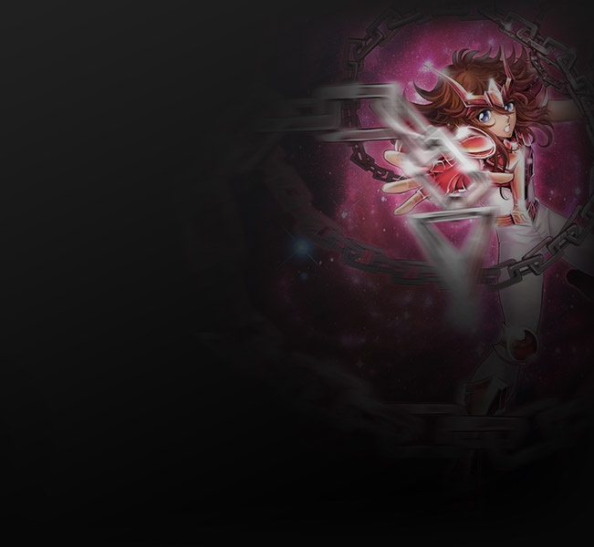
仙女座
特点：经过仙女岛的历练，拥有仙女座守护星座的圣斗士能够自如的在两种领域间切换，在神恩领域中他可以给予团队强大的恢复能力，并在关键时刻保护队友免受死亡的威胁，而在神威领域中，他的伤害能力又能得到大幅强化，从而可以运用锁链的力量给予敌人致命的打击。
作战范围：中程
特长：支援
战术：切换治疗及输出状态、回复激励队友、束缚、聚拢目标
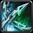
- 星云锁链：
- 释放锁链防御阵，连续将一定范围内的敌方击退同时布下锁链迷阵，使迷阵内的敌方速度减慢
- 星云风暴：
- 用锁链卷目标猛烈的砸击地面，并伤害周围单位
- 锁链加持：
- 将力量通过锁链传导于目标，释放技能期间使目标造成伤害大幅提高，并同时积攒神恩领域值
- 星光壁障：
- 使目标获得星光壁障状态，该状态可以使目标所受直接伤害降至最低
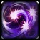
- 自由星光：
- 引导小宇宙的力量，解除目标所受到的控制，一段时间内给目标附加自由星光效果
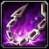
- 命运圆锁：
- 快速冲至目标身前，并使目标双腿麻痹无法移动，释放圆锁迷阵将目标周围一定范围内的怪物拉至目标身边，并使其减速
凤凰座
特点：凤凰座守护星座的圣斗士是死亡的化身，死亡皇后岛残酷的历练，铸就了他残暴无情的性格，他能够熟练的运用火焰的力量，他的敌人无一不在痛苦中死去，并燃烧为灰烬。同时，作为不死鸟的化身。他可以在濒临死亡的瞬间浴火重生。
作战范围：远程
特长：持续输出
战术：召唤黑暗圣斗士、火焰持续伤害、重生
- 凤翼天翔：
- 召唤火凤凰猛烈的焚烧目标区域。同时使自己进入火焰之力状态。对目标附加易燃和烈焰焚烧效果
- 凤凰幻魔拳：
- 利用精神力量打击对方，使其进入混乱状态。可造成很高伤害，目标烈焰焚烧层数越高，造成伤害越高

- 凤凰现临：
- 猛烈的打击目标，并溅射周围目标，目标烈焰焚烧层数越高，造成伤害越高。如果目标处于易燃状态，则会对目标附加地狱烈焰状态
- 死亡皇后之焰：
- 召唤出自己的精神幻像，缓慢向敌方移动。幻像一旦靠近敌方，会立即攻击周围敌人，并使其双脚暂时失去移动能力

- 怒火之焰：
- 打击目标，并溅射周围目标对目标附加烈焰焚烧状态，如果目标处于易燃状态，则有概率附加2层
- 憎恨虐杀：
- 将内心深处的怨恨发泄在目标身上，将其拖至身前给予猛烈的打击，并将及击飞。可造成很高伤害，目标烈焰焚烧层数越高，造成伤害越高
常用功能


客服电话